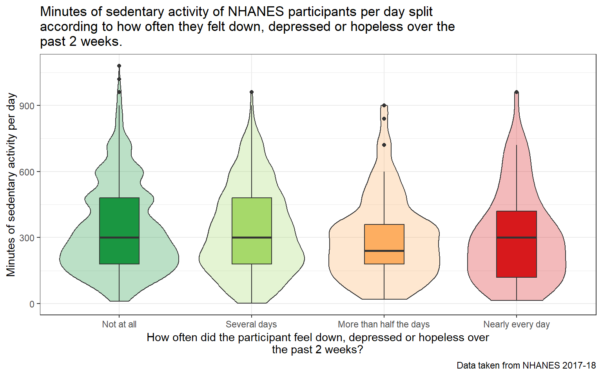

source("Love-boost.R")library(knitr)library(rmdformats)library(nhanesA)library(kableExtra)library(naniar)library(janitor)library(glue)library(rcompanion)library(gt)library(ggridges)library(patchwork)library(broom)library(tidyverse)## Global optionsoptions(max.print="100")opts_chunk$set(comment=NA)opts_knit$set(width=75)knitr::opts_chunk$set(comment =NA)
1.2 Ingesting Data
The nhanes package was used to read the data and store in in the form of an .Rds file for each of the data sets being used.
The tibbles were then merged on the SEQN variable.
Code
## Merging the tibblesNEW <-left_join(demo_raw, chol_raw, by ="SEQN")NEW2 <-left_join(NEW, alc_raw, by ="SEQN")NEW3 <-left_join(NEW2, depr_raw, by ="SEQN")combined_tib <-left_join(NEW3, phys_raw, by ="SEQN")
2 Cleaning the Data
Missing values, values such as “Refused”, or “Don’t Know”, were filtered out, and participants from 21 to 79 years of age were selected.
2,657 adults ages 21-79 participating in NHANES 2017-18 with complete data on the variables listed in the table below.
Variable name
Variable Type
Description
Analytic Role
SEQN
-
Respondent sequence number (Unique Identifier)
Indexing
LBDHDD
Continuous variable
Direct HDL-Cholesterol (mg/dL)
Outcome variable
PAD680
Continuous variable
Time spent sitting on a typical day (Minutes)
Quantitative predictor
PAD675
Continuous variable
Time spent performing moderate-intensity sports, fitness or recreational activities on a typical day (Minutes)
Quantitative Predictor
PAQ650
Binary categorical variable
Whether or not the participant performs any vigorous-intensity sports, fitness, or recreational activities that cause large increases in breathing or heart rate like running or basketball for at least 10 minutes continuously, in a typical week
Binary categorical predictor
ALQ151
Binary categorical variable
Whether or not the participant had a period in their life where they drank 4 or more drinks of any alcoholic beverage almost every day
Binary categorical predictor
DPQ020
Multi-categorical variable
Over the last 2 weeks, how often has the participant been bothered by the following problems: feeling down, depressed, or hopeless
Multi-categorical predictor
DPQ050
Multi-categorical variable
Over the last 2 weeks, how often has the participant been bothered by the following problems: poor appetite or overeating
Multi-categorical predictor
The levels of the categorical variables under study and their descriptions are as follows:
Whether or not the participant performs any vigorous-intensity sports, fitness, or recreational activities that cause large increases in breathing or heart rate like running or basketball for at least 10 minutes continuously, in a typical week
Whether or not the participant had a period in their life where they drank 4 or more drinks of any alcoholic beverage almost every day
DPQ020
6 levels: 0 = Not at all, 1 = Several days, 2 = More than half the days, 3 = Nearly every day, 7 = refused, 9 = Don’t know
4 levels : 0 = Not at all, 1 = Several days, 2 = More than half the days, 3 = Nearly every day
Over the last 2 weeks, how often has the participant been bothered by the following problems: feeling down, depressed, or hopeless
DPQ050
6 levels: 0 = Not at all, 1 = Several days, 2 = More than half the days, 3 = Nearly every day, 7 = refused, 9 = Don’t know
4 levels : 0 = Not at all, 1 = Several days, 2 = More than half the days, 3 = Nearly every day
Over the last 2 weeks, how often has the participant been bothered by the following problems: poor appetite or overeating
4 Analysis B : Comparing 2 Means with Independent Samples
4.1 The Question
Among adults of ages 21-79 participating in NHANES 2017-18, is there a significant difference in the values of HDL cholesterol values of participants across their self-reported participation or lack thereof in vigorous weekly physical activity?
4.2 Describing the Data
The Outcome Variable
The outcome variable is LBDHDD, which is a continuous quantitative variable. It describes the Direct HDL-Cholesterol levels of the participants in mg/dL(milligrams of HDL-Cholesterol per deciliter of blood). The values range from 5 to 189 mg/dL, from the documentation of the variable available at https://wwwn.cdc.gov/Nchs/Nhanes/2017-2018/P_HDL.htm#LBDHDD.
The Binary Categorical Exposure Variable
The categorical variable is PAQ650, which is a Binary Categorical Variable. It describes whether or not the participant performs any vigorous-intensity sports, fitness, or recreational activities that cause large increases in breathing or heart rate like running or basketball for at least 10 minutes continuously, in a typical week. It has the following factors :
“1” - Yes “0” - No
The samples here are independent, as the levels of the exposure variable PAQ650 are mutually exclusive and exhaustive, with only 1 of two possible answers that can apply to each participant.
4.2.1 Numerical Summary of Direct HDL- Cholesterol across weekly vigorous activity groups
The numerical summary indicates that there are differences in the distribution of the outcome variable across the vigorous activity groups. The range of HDL cholesterol goes to a higher level in the group that answered yes, and the mean and median HDL levels in the group are higher than that of the group that answered no, although it is yet to be seen if this difference is statistically meaningful. Furthermore, 1492 participants answered no, while 1165 participants answered yes, indicating that the study design is imbalanced.
Code
temp1 <- final_tib |>mutate(PAQ650_f =fct_recode(factor(PAQ650),"No vigorous weekly physical activity"="0","Atleast once per week"="1")) |>select(PAQ650_f,LBDHDD)ggplot(temp1, aes(x = LBDHDD, y = PAQ650_f, fill = PAQ650_f, height =after_stat(density))) + ggridges::geom_density_ridges(scale =2) +scale_fill_brewer(palette ="Blues") +guides(fill ="none") +labs(title =str_wrap("Direct HDL-Cholesterol levels of participants split according to their self-reported participation in vigorous weekly physical activity", width =70),x ="Direct HDL-Cholesterol (mg/dL)",y ="Self reported participation in weekly vigorous physical activity",subtitle =str_wrap(glue("Across ", nrow(temp1), " participants from NHANES 2017-18 data with complete data. "), width =70),caption ="Source: NHANES 2017-18.")
Picking joint bandwidth of 3.28
Visualizing the levels of direct HDL-cholesterol among study participants across weekly exercise activity shows that there is a difference in HDL-cholesterol levels, albeit slight. Individuals who participate in vigorous physical activity atleast once a week appear to have higher HDL-cholesterol levels than individuals who do not participate in weekly vigorous physical activity.
Code
p1 <-ggplot(temp1, aes(x = LBDHDD)) +geom_histogram(bins =20, fill ="#2b8cbe", col ="white") +facet_grid(PAQ650_f ~ ., labeller ='label_value') +labs( x ="Direct HDL-Cholesterol (mg/dL)", y ="")p2 <-ggplot(temp1, aes(sample = LBDHDD)) +geom_qq(col ="#2b8cbe") +geom_qq_line(col ="red") +facet_grid(PAQ650_f ~ ., labeller ='label_value') +labs(x ="", y ="Direct HDL-Cholesterol (mg/dL)")p3 <-ggplot(temp1, aes(x ="", y = LBDHDD)) +geom_violin(fill ="#2b8cbe", alpha =0.3) +geom_boxplot(fill ="#2b8cbe", width =0.3,outlier.color ="red") +facet_grid(PAQ650_f ~ ., labeller ='label_value') +labs(y ="Direct HDL-Cholesterol (mg/dL)", x ="") +coord_flip()p2 + p1 - p3 +plot_layout(ncol =1, height =c(3, 2)) +plot_annotation(title =str_wrap("Distribution of Direct HDL-Cholesterol (mg/dL), split according to the self reported weekly vigorous physical activity of the participant", width =100),subtitle =glue("Across ", nrow(temp1), " participants. Data taken from NHANES 2017-18"))
The distribution of Direct HDL-Cholesterol values across the two different groups of weekly vigorous activity demonstrates that the distribution has a significant right skew, from the shape of the Q-Q plots, the shape of the histogram, and the outliers detected in the boxplot and violinplot.
The numerical value of the skew also indicates that the data is right-skewed. From the data visualization and the numerical summaries, the right-skewed, non-normal distribution of the outcome variable indicates that the bootstrap method is ideal in order to compare the difference in means across the two groups.
4.3 Main Analysis
Given the non-normality of the outcome variable’s distribution and the imbalance in the study design, the Bootstrap method would be the ideal choice to estimate the difference in means across the two groups. After setting a seed, the bootdif function from the love-boost script was used to perform a bootstrapped analysis of the difference in mean HDL levels between the weekly vigorous exercise groups.
Mean Difference 0.05 0.95
2.545718 1.491790 3.637311
4.4 Conclusions
The 90% confidence interval for the difference in the means of Direct HDL-Cholesterol levels goes from 1.49 mg/dL to 3.64 mg/dL, which are a reasonable range of estimates for the true difference of the mean of Direct HDL-Cholesterol levels across the two weekly vigorous activity groups. The point estimate of the difference in means is 2.55 mg/dL. This confidence interval does not include zero.
From the fact that we are using a 90% confidence interval, we can be 90% sure that this method of creating a confidence interval will produce a result containing the true difference in means. (This means that if bootstrapping was done 100 times to create 100 different intervals, 90 of those intervals will have the true difference in mean Direct HDL-Cholesterol levels.)
There is a statistically detectable difference in Direct HDL-Cholesterol levels across the two groups of weekly vigorous physical activity.
The mean blood HDL cholesterol for individuals who reported weekly vigorous physical activity was 2.55 mg/dL higher than that of individuals who did not report weekly vigorous physical activity, with a 90% CI of (1.49, 3.64 mg/dL).
However, while there is a statistical difference, the mean difference varies from 1.49 to 3.64 mg/dL. This difference may not be medically significant.
5 Analysis C - Comparing 3+ Population Means via ANOVA
5.1 The Question
Among adults of ages 21-79 participating in NHANES 2017-18, are differences in severity of feeling down, depressed, or hopeless associated with differences in the number of minutes of daily sedentary activity among NHANES 2017-18 participants?
5.2 Describing the Data
The Outcome Variable
The outcome variable is PAD680, which is a continuous quantitative variable. It describes the participants time spent sitting on a typical day in Minutes.
The Multi-Categorical Exposure Variable
The categorical variable is DPQ020, which is a Multi-Categorical Variable. It describes how often has the participant been bothered by the following problems: feeling down, depressed, or hopeless over the past 2 weeks. It has the following factors :
4 levels :
0 = Not at all
1 = Several days
2 = More than half the days
3 = Nearly every day
Code
mosaic::favstats(PAD680 ~ DPQ020, data = final_tib) |>kbl() |>kable_classic_2(font_size =28)
DPQ020
min
Q1
median
Q3
max
mean
sd
n
missing
0
10
180
300
480
1080
336.9990
197.0243
2042
0
1
2
180
300
480
960
331.5556
196.0190
450
0
2
20
180
240
360
900
294.8454
186.7324
97
0
3
15
120
300
420
960
301.4706
208.0203
68
0
The above table depicts the summary statistics of PAD680 values across the levels of DPQ020. From the summary statistics alone, there appears to be a differences in the mean PAD680 value across the different levels of DPQ020. However, numbers alone are not enough to make any conclusions, and the data needs to be visualized.
Using ggplot and ggridges, the distribution of PAD680 values across the levels of DPQ020 was visualized, and given a color scale to help the different categories stand out visually.
Code
temp2 <- final_tib |>mutate(DPQ020_f =fct_recode(factor(DPQ020),"Not at all"="0","Several days"="1","More than half the days"="2","Nearly every day"="3")) |>select(DPQ020_f,PAD680)ggplot(temp2, aes(x = PAD680, y = DPQ020_f, fill = DPQ020_f, height =after_stat(density))) + ggridges::geom_density_ridges(scale =2) +scale_fill_brewer(palette ="RdYlGn", direction =-1) +guides(fill ="none") +labs(title =str_wrap("Minutes of sedentary activity of NHANES participants per day split according to how often they felt down, depressed or hopeless over the past 2 weeks.", width =70),x ="Minutes of sedentary activity during the day (Minutes)",y =str_wrap("How often did the participant feel down, depressed or hopeless over the past 2 weeks?",width =70),subtitle =str_wrap(glue("Across ", nrow(temp2), " participants from NHANES 2017-18 data with complete data. "), width =70),caption ="Source: NHANES 2017-18.")
Picking joint bandwidth of 54.9
The above graphic visualizes the distribution of DPQ020(Minutes of sedentary activity of NHANES participants per day) according to the PAD680(How often did the participant feel down, depressed or hopeless over the past 2 weeks?) category of the participant. From looking at the plot, it does appear that categories 2 (More than half the days) and 3 (Nearly every day) have a larger proportion of minutes of sedentary activity.
Code
ggplot(temp2, aes(x = PAD680, y = DPQ020_f, fill = DPQ020_f)) +geom_violin(alpha =0.3) +geom_boxplot(width =0.3) +scale_fill_brewer(palette ="RdYlGn", direction =-1) +coord_flip() +guides(fill ="none") +theme_bw() +labs(title =str_wrap("Minutes of sedentary activity of NHANES participants per day split according to how often they felt down, depressed or hopeless over the past 2 weeks.", width =70),y =str_wrap("How often did the participant feel down, depressed or hopeless over the past 2 weeks?",width =70),x ="Minutes of sedentary activity per day",caption ="Data taken from NHANES 2017-18")

The above plot demonstrates the variance of PAD680 values across the 4 categories of DPQ020. PAD680 appears to have more or less equal variance across the 4 categories.
Code
p1 <-ggplot(temp2, aes(x = PAD680)) +geom_histogram(bins =20, fill ="#2b8cbe", col ="white") +facet_grid(DPQ020_f ~ ., labeller ='label_value') +labs( x ="Minutes of sedentary activity during the day (Minutes)", y ="")p2 <-ggplot(temp2, aes(sample = PAD680)) +geom_qq(col ="#2b8cbe") +geom_qq_line(col ="red") +facet_grid(DPQ020_f ~ ., labeller ='label_value') +labs(x ="", y ="Minutes of sedentary activity during the day (Minutes)")p3 <-ggplot(temp2, aes(x ="", y = PAD680)) +geom_violin(fill ="#2b8cbe", alpha =0.3) +geom_boxplot(fill ="#2b8cbe", width =0.3,outlier.color ="red") +facet_grid(DPQ020_f ~ ., labeller ='label_value') +labs(y ="Minutes of sedentary activity during the day (Minutes)", x ="") +coord_flip()p2 + p1 - p3 +plot_layout(ncol =1, height =c(3, 2)) +plot_annotation(title =str_wrap("Distribution of Minutes of Sedentary Activity of NHANES participants per day", width =90),subtitle =str_wrap(glue("Across ", nrow(temp2), " participants, split according to how often they felt down, depressed or hopeless over the past 2 weeks. Data taken from NHANES 2017-18."), width =90))
These plots demonstrate the distribution of PAD680. The distribution is skewed to the right, and does not appear to have a normal distribution.
The numerical summaries also demonstrate the PAD680 does not have a normal distribution; it is right-skewed. There is a marked difference between the mean and the median, and the numerical value of the skew also demonstrates a right skew.
5.3 Main Analysis
Given that PAD680 does not have a normal distribution, even though the distribution of PAD680 across DPQ020 has equal variance, the assumptions of an ANOVA test would be violated if it were to be performed on these two variables.
The three main assumptions of an ANOVA test are as follows.
Normality
Each sample was drawn from a normally distributed population.
Equal variance
The variances of the populations that the samples come from are equal.
Independence
The observations in each group are independent of each other and the observations within groups were obtained by a random sample.
Thus, the Kruskal-Wallis rank sum test would be preferable to the ANOVA test to estimate if there is a significant difference in the mean value of PAD680 across the 4 categories of DPQ020, especially because of the significant right-skew of the data. The Kruskal-Wallis test is non-parametric, which means that it does not need any distributional assumption.
Code
kruskal.test(PAD680 ~ DPQ020, data = final_tib)
Kruskal-Wallis rank sum test
data: PAD680 by DPQ020
Kruskal-Wallis chi-squared = 6.7478, df = 3, p-value = 0.08038
The results of the Kruskal-Wallis test do not indicate a meaningful difference in the values of PAD680 across the levels of DPQ020, given that the p value is 0.080, with a significance value of 0.05.
5.4 Conclusions
From the results of the Kruskal-Wallis test, among the study population taken from NHANES 2017-18, there is no statistically detectable difference in the number of minutes of daily sedentary activity across the different levels of how often they felt down, depressed or hopeless over the past 2 weeks.
6 Analysis D - Analyzing a 2x2 table
6.1 The Question
Among adults of ages 21-79 participating in NHANES 2017-18, is there an association between a period of heavy drinking (described as having 4 or more alcoholic beverages daily) and a lack of weekly vigorous physical activity?
6.2 Describing the Data
The two binary categorical variables under study are:
The Outcome Variable
PAQ650 - It describes whether or not the participant performs any vigorous-intensity sports, fitness, or recreational activities that cause large increases in breathing or heart rate like running or basketball for at least 10 minutes continuously, in a typical week. It has the following levels:
1 = Yes
0 = No
The Exposure Variable
ALQ151 - It describes whether or not the participant had a period in their life where they drank 4 or more drinks of any alcoholic beverage almost every day. It has the following levels:
1 = Yes
0 = No
Using the mutate function, the variables ALQ151 and PAQ650 were given different factor names to aid in understanding their meaning.
Using the gt package in conjunction with the glue package, a meaningful, visually appealing 2x2 table was created.
Code
gt_table3 <-gt(table3)gt_table3 <- gt_table3 |>tab_header(title =md("**Exploring the relationship between heavy drinking and a lack of weekly vigorous physical activity.**"),subtitle =glue("Across ", nrow(temp3), " participants with complete data.") ) |>tab_spanner(label ="Does the participant perform any vigorous-intensity activities that cause large increases in breathing or heart rate for at least 10 minutes continuously, in a typical week?",columns =c(Yes, No) ) |>cols_label("ALQ151"="Did the participant have a period in their life where they drank 4 or more drinks of any alcoholic beverage almost every day?") |>cols_label("No"=md("**No**")) |>cols_label("Yes"=md("**Yes**")) |>tab_source_note(source_note =md("**Source:** _National Health and Nutrition Examination Survey, 2017-2018_") )gt_table3
Exploring the relationship between heavy drinking and a lack of weekly vigorous physical activity.
Across 2657 participants with complete data.
Did the participant have a period in their life where they drank 4 or more drinks of any alcoholic beverage almost every day?
Does the participant perform any vigorous-intensity activities that cause large increases in breathing or heart rate for at least 10 minutes continuously, in a typical week?
Yes
No
Yes
131 (37.9%)
215 (62.1%)
No
1,034 (44.7%)
1,277 (55.3%)
Total
1,165 (43.8%)
1,492 (56.2%)
Source:National Health and Nutrition Examination Survey, 2017-2018
6.3 Main Analysis
Using the twobytwo function from the love-boost script, an analysis of the two-by-two table was conducted.
Code
twobytwo(215+2, 131+2, 1277+2, 1034+2, "Drank 4 or more alcoholic drinks daily","Did not have such a period","No weekly physical activity","Had weekly physical activity", conf.level =0.90)
2 by 2 table analysis:
------------------------------------------------------
Outcome : No weekly physical activity
Comparing : Drank 4 or more alcoholic drinks daily vs. Did not have such a period
No weekly physical activity
Drank 4 or more alcoholic drinks daily 217
Did not have such a period 1279
Had weekly physical activity
Drank 4 or more alcoholic drinks daily 133
Did not have such a period 1036
P(No weekly physical activity)
Drank 4 or more alcoholic drinks daily 0.6200
Did not have such a period 0.5525
90% conf. interval
Drank 4 or more alcoholic drinks daily 0.5765 0.6617
Did not have such a period 0.5354 0.5694
90% conf. interval
Relative Risk: 1.1222 1.0407 1.2101
Sample Odds Ratio: 1.3216 1.0888 1.6041
Conditional MLE Odds Ratio: 1.3215 1.0822 1.6163
Probability difference: 0.0675 0.0209 0.1125
Exact P-value: 0.0179
Asymptotic P-value: 0.0179
------------------------------------------------------
6.4 Conclusions
6.4.1 The Relative Risk
Individuals who have had a period of their life where they drank 4 or more alcoholic drinks a day have a 1.12 times higher risk(90% CI-1.04 to 1.21) of having no weekly vigorous physical activity when compared to individuals who did not have such a period.
6.4.2 The Odds Ratio
Individuals who do not report weekly vigorous physical activity have 1.32 times higher odds(90% CI-1.09 to 1.60) of having had a period in their lives where they drank 4 or more alcoholic drinks a day when compared to individuals who did report weekly vigorous physical activity.
6.4.3 The Risk Difference
The difference between in the probability of having no weekly vigorous physical activity for individuals who have had a period of their life where they drank 4 or more alcoholic drinks versus individuals who did not have such a period is 0.068 (90% CI - 0.021 to 0.113).
7 Analysis E - Two-Way (4 x 2) Contingency Table
7.1 The Question
Among adults of ages 21-79 participating in NHANES 2017-18, is there an association between having had a period of heavy drinking (described as having 4 or more alcoholic beverages daily) and symptoms of depression (how often has the participant been bothered by the following problems: feeling down, depressed, or hopeless)?
7.2 Describing the Data
Using the mutate function, the variables under study and their factors were re-leveled and renamed in order to create context and meaning for the data.
The tabyl function was then used to create a dataset containing the different factors of DPQ020 as the rows, and the two factors of ALQ151 as the columns.
Code
temp4 <- final_tib |>select(DPQ020, ALQ151) |>mutate(DPQ020 =fct_recode(factor(DPQ020),"Not at all"="0","Several Days"="1","More than half the days"="2","Nearly every day"="3"),ALQ151 =fct_recode(factor(ALQ151),"No"="0","Yes"="1"))table4 <- temp4 |>tabyl(DPQ020, ALQ151)|>adorn_totals(where =c("row")) |>adorn_percentages(denominator ="row") |>adorn_pct_formatting() |>adorn_ns(position ="front")
The gt package was used to create a meaningful, visually appealing table for the data present in table4, in conjunction with the glue package.
Code
gt_table4 <-gt(table4)gt_table4 <- gt_table4 |>tab_header(title =md("**Exploring the relationship between depression and excessive drinking.**"),subtitle =glue("Across ", nrow(temp4), " participants with complete data.") )|>tab_spanner(label ="Did the participant have a period in their life where they drank 4 or more drinks of any alcoholic beverage almost every day?",columns =c(Yes, No) ) |>cols_label("DPQ020"="Over the last 2 weeks, how often has the participant been bothered by the following problems: feeling down, depressed, or hopeless") |>cols_label("Yes"=md("**Yes**")) |>cols_label("No"=md("**No**")) |>tab_source_note(source_note =md("**Source:** _National Health and Nutrition Examination Survey, 2017-2018_") )gt_table4
Exploring the relationship between depression and excessive drinking.
Across 2657 participants with complete data.
Over the last 2 weeks, how often has the participant been bothered by the following problems: feeling down, depressed, or hopeless
Did the participant have a period in their life where they drank 4 or more drinks of any alcoholic beverage almost every day?
Yes
No
Not at all
238 (11.7%)
1,804 (88.3%)
Several Days
67 (14.9%)
383 (85.1%)
More than half the days
16 (16.5%)
81 (83.5%)
Nearly every day
25 (36.8%)
43 (63.2%)
Total
346 (13.0%)
2,311 (87.0%)
Source:National Health and Nutrition Examination Survey, 2017-2018
7.3 Main Analysis
The Pearson Chi-Square test of Independence was conducted to assess if there is an association between the rows and the columns of the contingency table.
From the p-value of the above Chi-squared test, we can assume that there is a definite association between the rows and columns of the contingency table.
Cramer’s V
From the Chi-squared test, we know that there is an association between the rows and the columns of the contingency table. However, to identify the strength of the association, the Cramer’s V test, which is a test of statistical strength, can be conducted.
The point estimate of the Cramer’s V value is 0.122, with 95% confidence intervals ranging from 0.074 to 0.180.
From the Cramer’s V test, given that there are 3 degrees of freedom, the association between depression and excessive drinking is not particularly strong, although it is definitely present.
7.3.1 Chi-Square Test Assumptions
The levels of the variables are mutually exclusive.
Each subject may contribute data to one and only one cell in the χ2.
The study groups must be independent.
In addition to these, the Cochran’s assumptions must also be met, which are:
No cells with 0 counts
At least 80% of the cells in our table have counts of 5 or higher
The Expected counts in each cell of the table should be 5 or more
7.4 Conclusions
11.7% of participants who reported never feeling down, depressed, or hopeless over the past 2 weeks had a period in their life where they drank 4 or more drinks of any alcoholic beverage almost every day.
The proportion of people who have a history of excessive drinking increases with the severity of the self reported symptoms of depression.
36.8% of participants who felt down, depressed or hopeless nearly every day had a period in their life where they drank 4 or more drinks of any alcoholic beverage almost every day.
Among adults of ages 21-79 participating in NHANES 2017-18, individuals who have had a period of heavy drinking (described as having 4 or more alcoholic beverages daily) have a greater degree of association with symptoms of depression (how often has the participant been bothered by the following problems: feeling down, depressed, or hopeless) compared to individuals who have not had a period of heavy drinking. Stronger feelings of depression are associated more strongly with a history of having had a period of excessive drinking.
---title: "Analysing the relationship between Blood Cholesterol levels, Physical Activity, Excessive Drinking and Depression. "author: "Naveen Kannan"date: 2022-12-14format: html: toc: true number-sections: true code-fold: show code-tools: true code-overflow: wrap date-format: iso---# Setup and Data Ingest## Loading Packages```{r setup, message = FALSE, cache=FALSE}source("Love-boost.R")library(knitr)library(rmdformats)library(nhanesA)library(kableExtra)library(naniar)library(janitor)library(glue)library(rcompanion)library(gt)library(ggridges)library(patchwork)library(broom)library(tidyverse)## Global optionsoptions(max.print="100")opts_chunk$set(comment=NA)opts_knit$set(width=75)knitr::opts_chunk$set(comment =NA)```## Ingesting DataThe `nhanes` package was used to read the data and store in in the form of an .Rds file for each of the data sets being used.```{r data_ingest}## Demographic Data#demo_raw <- nhanes('P_DEMO') |> tibble()#saveRDS(demo_raw, "C:\\Users\\navee\\Desktop\\PQHS 431\\Project B\\data\\P_DEMO.Rds")demo_raw <-readRDS("data/P_DEMO.Rds")## Alcohol Data#alc_raw <- nhanes('P_ALQ') |> tibble()#saveRDS(alc_raw, "C:\\Users\\navee\\Desktop\\PQHS 431\\Project B\\data\\P_ALQ.Rds")alc_raw <-readRDS("data/P_ALQ.Rds")## Depression data#depr_raw <- nhanes('P_DPQ') |> tibble()#saveRDS(depr_raw, "C:\\Users\\navee\\Desktop\\PQHS 431\\Project B\\data\\P_DPQ.Rds")depr_raw <-readRDS("data/P_DPQ.Rds")## Physical activity data#phys_raw <- nhanes('P_PAQ') |> tibble()#saveRDS(phys_raw, "C:\\Users\\navee\\Desktop\\PQHS 431\\Project B\\data\\P_PAQ.Rds")phys_raw <-readRDS("data/P_PAQ.Rds")## Cholesterol data#chol_raw <- nhanes('P_HDL') |> tibble()#saveRDS(chol_raw, "C:\\Users\\navee\\Desktop\\PQHS 431\\Project B\\data\\P_HDL.Rds")chol_raw <-readRDS("data/P_HDL.Rds")```The tibbles were then merged on the `SEQN` variable.```{r}## Merging the tibblesNEW <-left_join(demo_raw, chol_raw, by ="SEQN")NEW2 <-left_join(NEW, alc_raw, by ="SEQN")NEW3 <-left_join(NEW2, depr_raw, by ="SEQN")combined_tib <-left_join(NEW3, phys_raw, by ="SEQN")```# Cleaning the DataMissing values, values such as "Refused", or "Don't Know", were filtered out, and participants from 21 to 79 years of age were selected.```{r}final_tib <- combined_tib|>filter(RIDSTATR ==2) |>filter(RIDAGEYR >20& RIDAGEYR <80) |>filter(PAD680 !=7777& PAD680 !=9999& PAD675 !=7777& PAD675 !=9999& PAQ650 !=7& PAQ650 !=9& ALQ151 !=7& ALQ151 !=9& DPQ020 !=7& DPQ020 !=9& DPQ050 !=7& DPQ050 !=9& LBDHDD !=".") |>filter(complete.cases(LBDHDD,PAD680,PAD675,PAQ650,ALQ151,DPQ020,DPQ050))|>mutate(PAQ650 =2- PAQ650) |>mutate(ALQ151 =2- ALQ151) |>mutate(PAQ650 =as.factor(PAQ650)) |>mutate(ALQ151 =as.factor(ALQ151)) |>mutate(DPQ020 =as.factor(DPQ020)) |>mutate(DPQ050 =as.factor(DPQ050)) |>select(SEQN,LBDHDD,PAD680,PAD675,PAQ650,ALQ151,DPQ020,DPQ050) final_tib```# Codebook and Data Description**2,657 adults ages 21-79 participating in NHANES 2017-18 with complete data on the variables listed in the table below.**| Variable name | Variable Type | Description | Analytic Role ||--------------|--------------|--------------------------------|--------------|| `SEQN` | \- | Respondent sequence number **(Unique Identifier)** | Indexing || `LBDHDD` | Continuous variable | Direct HDL-Cholesterol **(mg/dL)** | Outcome variable || `PAD680` | Continuous variable | Time spent sitting on a typical day **(Minutes)** | Quantitative predictor || `PAD675` | Continuous variable | Time spent performing moderate-intensity sports, fitness or recreational activities on a typical day **(Minutes)** | Quantitative Predictor || `PAQ650` | Binary categorical variable | Whether or not the participant performs any vigorous-intensity sports, fitness, or recreational activities that cause large increases in breathing or heart rate like running or basketball for at least 10 minutes continuously, in a typical week | Binary categorical predictor || `ALQ151` | Binary categorical variable | Whether or not the participant had a period in their life where they drank 4 or more drinks of any alcoholic beverage almost every day | Binary categorical predictor || `DPQ020` | Multi-categorical variable | Over the last 2 weeks, how often has the participant been bothered by the following problems: feeling down, depressed, or hopeless | Multi-categorical predictor || `DPQ050` | Multi-categorical variable | Over the last 2 weeks, how often has the participant been bothered by the following problems: poor appetite or overeating | Multi-categorical predictor |**The levels of the categorical variables under study and their descriptions are as follows:**| Variable name | Original Levels | New levels | Variable description ||---------------|--------------------|---------------|----------------------|| `PAQ650` | 4 levels: 1 = Yes, 2 = No, 7 = Refused, 9 = Don't Know | 2 levels: 1 = Yes, 0 = No | Whether or not the participant performs any vigorous-intensity sports, fitness, or recreational activities that cause large increases in breathing or heart rate like running or basketball for at least 10 minutes continuously, in a typical week || `ALQ151` | 4 levels: 1 = Yes, 2 = No, 7 = Refused, 9 = Don't Know | 2 levels: 1 = Yes, 0 = No | Whether or not the participant had a period in their life where they drank 4 or more drinks of any alcoholic beverage almost every day || `DPQ020` | 6 levels: 0 = Not at all, 1 = Several days, 2 = More than half the days, 3 = Nearly every day, 7 = refused, 9 = Don't know | 4 levels : 0 = Not at all, 1 = Several days, 2 = More than half the days, 3 = Nearly every day | Over the last 2 weeks, how often has the participant been bothered by the following problems: feeling down, depressed, or hopeless || `DPQ050` | 6 levels: 0 = Not at all, 1 = Several days, 2 = More than half the days, 3 = Nearly every day, 7 = refused, 9 = Don't know | 4 levels : 0 = Not at all, 1 = Several days, 2 = More than half the days, 3 = Nearly every day | Over the last 2 weeks, how often has the participant been bothered by the following problems: poor appetite or overeating |# Analysis B : Comparing 2 Means with Independent Samples## The Question**Among adults of ages 21-79 participating in NHANES 2017-18, is there a significant difference in the values of HDL cholesterol values of participants across their self-reported participation or lack thereof in vigorous weekly physical activity?**## Describing the Data**The Outcome Variable**The outcome variable is `LBDHDD`, which is a *continuous quantitative variable*. It describes the Direct HDL-Cholesterol levels of the participants in **mg/dL(milligrams of HDL-Cholesterol per deciliter of blood).** The values range from 5 to 189 mg/dL, from the documentation of the variable available at https://wwwn.cdc.gov/Nchs/Nhanes/2017-2018/P_HDL.htm#LBDHDD.**The Binary Categorical Exposure Variable**The categorical variable is `PAQ650`, which is a **Binary Categorical Variable**. It describes whether or not the participant performs any vigorous-intensity sports, fitness, or recreational activities that cause large increases in breathing or heart rate like running or basketball for at least 10 minutes continuously, in a typical week. It has the following factors :"1" - Yes "0" - NoThe samples here are independent, as the levels of the exposure variable `PAQ650` are mutually exclusive and exhaustive, with only 1 of two possible answers that can apply to each participant.### Numerical Summary of Direct HDL- Cholesterol across weekly vigorous activity groups```{r, message = FALSE}mosaic::favstats(LBDHDD ~ PAQ650, data = final_tib) |>kable(digits =2) |>kable_classic_2(font_size =28, full_width = F)```The numerical summary indicates that there are differences in the distribution of the outcome variable across the vigorous activity groups. The range of HDL cholesterol goes to a higher level in the group that answered yes, and the mean and median HDL levels in the group are higher than that of the group that answered no, although it is yet to be seen if this difference is statistically meaningful. Furthermore, 1492 participants answered no, while 1165 participants answered yes, indicating that the study design is imbalanced.```{r, fig.width = 8, fig.height=5}temp1 <- final_tib |>mutate(PAQ650_f =fct_recode(factor(PAQ650),"No vigorous weekly physical activity"="0","Atleast once per week"="1")) |>select(PAQ650_f,LBDHDD)ggplot(temp1, aes(x = LBDHDD, y = PAQ650_f, fill = PAQ650_f, height =after_stat(density))) + ggridges::geom_density_ridges(scale =2) +scale_fill_brewer(palette ="Blues") +guides(fill ="none") +labs(title =str_wrap("Direct HDL-Cholesterol levels of participants split according to their self-reported participation in vigorous weekly physical activity", width =70),x ="Direct HDL-Cholesterol (mg/dL)",y ="Self reported participation in weekly vigorous physical activity",subtitle =str_wrap(glue("Across ", nrow(temp1), " participants from NHANES 2017-18 data with complete data. "), width =70),caption ="Source: NHANES 2017-18.") ```Visualizing the levels of direct HDL-cholesterol among study participants across weekly exercise activity shows that there is a difference in HDL-cholesterol levels, albeit slight. Individuals who participate in vigorous physical activity atleast once a week appear to have higher HDL-cholesterol levels than individuals who do not participate in weekly vigorous physical activity.```{r, fig.width= 8, fig.height = 12}p1 <-ggplot(temp1, aes(x = LBDHDD)) +geom_histogram(bins =20, fill ="#2b8cbe", col ="white") +facet_grid(PAQ650_f ~ ., labeller ='label_value') +labs( x ="Direct HDL-Cholesterol (mg/dL)", y ="")p2 <-ggplot(temp1, aes(sample = LBDHDD)) +geom_qq(col ="#2b8cbe") +geom_qq_line(col ="red") +facet_grid(PAQ650_f ~ ., labeller ='label_value') +labs(x ="", y ="Direct HDL-Cholesterol (mg/dL)")p3 <-ggplot(temp1, aes(x ="", y = LBDHDD)) +geom_violin(fill ="#2b8cbe", alpha =0.3) +geom_boxplot(fill ="#2b8cbe", width =0.3,outlier.color ="red") +facet_grid(PAQ650_f ~ ., labeller ='label_value') +labs(y ="Direct HDL-Cholesterol (mg/dL)", x ="") +coord_flip()p2 + p1 - p3 +plot_layout(ncol =1, height =c(3, 2)) +plot_annotation(title =str_wrap("Distribution of Direct HDL-Cholesterol (mg/dL), split according to the self reported weekly vigorous physical activity of the participant", width =100),subtitle =glue("Across ", nrow(temp1), " participants. Data taken from NHANES 2017-18"))```The distribution of Direct HDL-Cholesterol values across the two different groups of weekly vigorous activity demonstrates that the distribution has a significant right skew, from the shape of the Q-Q plots, the shape of the histogram, and the outliers detected in the boxplot and violinplot.```{r}final_tib |>summarise(mean(LBDHDD), median(LBDHDD), sd(LBDHDD),skew1 = (mean(LBDHDD) -median(LBDHDD))/sd(LBDHDD)) |>kbl(digits =2) |>kable_classic_2(font_size =28, full_width = F)```The numerical value of the skew also indicates that the data is right-skewed. From the data visualization and the numerical summaries, the right-skewed, non-normal distribution of the outcome variable indicates that the bootstrap method is ideal in order to *compare the difference in means across the two groups.*## Main AnalysisGiven the non-normality of the outcome variable's distribution and the imbalance in the study design, the Bootstrap method would be the ideal choice to estimate the difference in means across the two groups. After setting a seed, the `bootdif` function from the love-boost script was used to perform a bootstrapped analysis of the difference in mean HDL levels between the weekly vigorous exercise groups.```{r, message = FALSE}set.seed(4312022)bootdif(final_tib$LBDHDD, final_tib$PAQ650, conf.level =0.90)```## ConclusionsThe 90% confidence interval for the difference in the means of Direct HDL-Cholesterol levels goes from 1.49 mg/dL to 3.64 mg/dL, which are a reasonable range of estimates for the true difference of the mean of Direct HDL-Cholesterol levels across the two weekly vigorous activity groups. The point estimate of the difference in means is 2.55 mg/dL. This confidence interval *does not include zero.*From the fact that we are using a 90% confidence interval, we can be 90% sure that this method of creating a confidence interval will produce a result containing the true difference in means. *(This means that if bootstrapping was done 100 times to create 100 different intervals, 90 of those intervals will have the true difference in mean Direct HDL-Cholesterol levels.)***There is a statistically detectable difference in Direct HDL-Cholesterol levels across the two groups of weekly vigorous physical activity.****The mean blood HDL cholesterol for individuals who reported weekly vigorous physical activity was 2.55 mg/dL higher than that of individuals who did not report weekly vigorous physical activity, with a 90% CI of (1.49, 3.64 mg/dL).**However, while there is a statistical difference, the mean difference varies from 1.49 to 3.64 mg/dL. This difference may not be medically significant.# Analysis C - Comparing 3+ Population Means via ANOVA## The Question**Among adults of ages 21-79 participating in NHANES 2017-18, are differences in severity of feeling down, depressed, or hopeless associated with differences in the number of minutes of daily sedentary activity among NHANES 2017-18 participants?**## Describing the Data**The Outcome Variable**The outcome variable is `PAD680`, which is a *continuous quantitative variable*. It describes the participants time spent sitting on a typical day in **Minutes**.**The Multi-Categorical Exposure Variable**The categorical variable is `DPQ020`, which is a **Multi-Categorical Variable**. It describes how often has the participant been bothered by the following problems: feeling down, depressed, or hopeless over the past 2 weeks. It has the following factors :4 levels :0 = Not at all1 = Several days2 = More than half the days3 = Nearly every day```{r}mosaic::favstats(PAD680 ~ DPQ020, data = final_tib) |>kbl() |>kable_classic_2(font_size =28)```The above table depicts the summary statistics of `PAD680` values across the levels of `DPQ020`. From the summary statistics alone, there appears to be a differences in the mean `PAD680` value across the different levels of `DPQ020`. However, numbers alone are not enough to make any conclusions, and the data needs to be visualized.Using ggplot and ggridges, the distribution of `PAD680` values across the levels of `DPQ020` was visualized, and given a color scale to help the different categories stand out visually.```{r, fig.width = 8, fig.height=5}temp2 <- final_tib |>mutate(DPQ020_f =fct_recode(factor(DPQ020),"Not at all"="0","Several days"="1","More than half the days"="2","Nearly every day"="3")) |>select(DPQ020_f,PAD680)ggplot(temp2, aes(x = PAD680, y = DPQ020_f, fill = DPQ020_f, height =after_stat(density))) + ggridges::geom_density_ridges(scale =2) +scale_fill_brewer(palette ="RdYlGn", direction =-1) +guides(fill ="none") +labs(title =str_wrap("Minutes of sedentary activity of NHANES participants per day split according to how often they felt down, depressed or hopeless over the past 2 weeks.", width =70),x ="Minutes of sedentary activity during the day (Minutes)",y =str_wrap("How often did the participant feel down, depressed or hopeless over the past 2 weeks?",width =70),subtitle =str_wrap(glue("Across ", nrow(temp2), " participants from NHANES 2017-18 data with complete data. "), width =70),caption ="Source: NHANES 2017-18.") ```The above graphic visualizes the distribution of `DPQ020` *(Minutes of sedentary activity of NHANES participants per day)* according to the `PAD680` *(How often did the participant feel down, depressed or hopeless over the past 2 weeks?)* category of the participant. From looking at the plot, it does appear that categories 2 (More than half the days) and 3 (Nearly every day) have a larger proportion of minutes of sedentary activity.```{r, fig.width = 8, fig.height=5}ggplot(temp2, aes(x = PAD680, y = DPQ020_f, fill = DPQ020_f)) +geom_violin(alpha =0.3) +geom_boxplot(width =0.3) +scale_fill_brewer(palette ="RdYlGn", direction =-1) +coord_flip() +guides(fill ="none") +theme_bw() +labs(title =str_wrap("Minutes of sedentary activity of NHANES participants per day split according to how often they felt down, depressed or hopeless over the past 2 weeks.", width =70),y =str_wrap("How often did the participant feel down, depressed or hopeless over the past 2 weeks?",width =70),x ="Minutes of sedentary activity per day",caption ="Data taken from NHANES 2017-18")```The above plot demonstrates the variance of `PAD680` values across the 4 categories of `DPQ020`. `PAD680` appears to have more or less equal variance across the 4 categories.```{r, fig.width= 8, fig.height = 16}p1 <-ggplot(temp2, aes(x = PAD680)) +geom_histogram(bins =20, fill ="#2b8cbe", col ="white") +facet_grid(DPQ020_f ~ ., labeller ='label_value') +labs( x ="Minutes of sedentary activity during the day (Minutes)", y ="")p2 <-ggplot(temp2, aes(sample = PAD680)) +geom_qq(col ="#2b8cbe") +geom_qq_line(col ="red") +facet_grid(DPQ020_f ~ ., labeller ='label_value') +labs(x ="", y ="Minutes of sedentary activity during the day (Minutes)")p3 <-ggplot(temp2, aes(x ="", y = PAD680)) +geom_violin(fill ="#2b8cbe", alpha =0.3) +geom_boxplot(fill ="#2b8cbe", width =0.3,outlier.color ="red") +facet_grid(DPQ020_f ~ ., labeller ='label_value') +labs(y ="Minutes of sedentary activity during the day (Minutes)", x ="") +coord_flip()p2 + p1 - p3 +plot_layout(ncol =1, height =c(3, 2)) +plot_annotation(title =str_wrap("Distribution of Minutes of Sedentary Activity of NHANES participants per day", width =90),subtitle =str_wrap(glue("Across ", nrow(temp2), " participants, split according to how often they felt down, depressed or hopeless over the past 2 weeks. Data taken from NHANES 2017-18."), width =90))```These plots demonstrate the distribution of `PAD680`. The distribution is skewed to the right, and does not appear to have a normal distribution.```{r}final_tib |>summarise(mean(PAD680), median(PAD680), sd(PAD680),skew1 = (mean(PAD680) -median(PAD680))/sd(PAD680)) |>kbl(digits =2) |>kable_classic_2(font_size =28, full_width = F)```The numerical summaries also demonstrate the `PAD680` does not have a normal distribution; it is right-skewed. There is a marked difference between the mean and the median, and the numerical value of the skew also demonstrates a right skew.## Main AnalysisGiven that `PAD680` does not have a normal distribution, even though the distribution of `PAD680` across `DPQ020` has equal variance, the assumptions of an ANOVA test would be violated if it were to be performed on these two variables.The three main assumptions of an ANOVA test are as follows.1. **Normality***Each sample was drawn from a normally distributed population.*2. **Equal variance***The variances of the populations that the samples come from are equal.*3. **Independence***The observations in each group are independent of each other and the observations within groups were obtained by a random sample.*Thus, the Kruskal-Wallis rank sum test would be preferable to the ANOVA test to estimate if there is a significant difference in the mean value of `PAD680` across the 4 categories of `DPQ020`, especially because of the significant right-skew of the data. The Kruskal-Wallis test is *non-parametric*, which means that it does not need any distributional assumption.```{r}kruskal.test(PAD680 ~ DPQ020, data = final_tib)```The results of the Kruskal-Wallis test do not indicate a meaningful difference in the values of `PAD680` across the levels of `DPQ020`, given that the p value is 0.080, with a significance value of 0.05.## Conclusions**From the results of the Kruskal-Wallis test, among the study population taken from NHANES 2017-18, there is no statistically detectable difference in the number of minutes of daily sedentary activity across the different levels of how often they felt down, depressed or hopeless over the past 2 weeks.**# Analysis D - Analyzing a 2x2 table## The Question**Among adults of ages 21-79 participating in NHANES 2017-18, is there an association between a period of heavy drinking (described as having 4 or more alcoholic beverages daily) and a lack of weekly vigorous physical activity?**## Describing the DataThe two binary categorical variables under study are:**The Outcome Variable**`PAQ650` - It describes whether or not the participant performs any vigorous-intensity sports, fitness, or recreational activities that cause large increases in breathing or heart rate like running or basketball for at least 10 minutes continuously, in a typical week. It has the following levels:1 = Yes0 = No**The Exposure Variable**`ALQ151` - It describes whether or not the participant had a period in their life where they drank 4 or more drinks of any alcoholic beverage almost every day. It has the following levels:1 = Yes0 = NoUsing the mutate function, the variables `ALQ151` and `PAQ650` were given different factor names to aid in understanding their meaning.```{r}temp3<- final_tib |>mutate(ALQ151 =fct_recode(factor(ALQ151),"Yes"="1","No"="0"),PAQ650 =fct_recode(factor(PAQ650),"Yes"="1","No"="0")) |>select(PAQ650, ALQ151)temp3 <- temp3 |>mutate(ALQ151 =fct_relevel(ALQ151, "Yes"),PAQ650 =fct_relevel(PAQ650, "No", "Yes"))```The tabyl function was used to create a table of the two variables.```{r}table3 <- temp3 |>tabyl(ALQ151, PAQ650)|>adorn_totals(where =c("row")) |>adorn_percentages(denominator ="row") |>adorn_pct_formatting() |>adorn_ns(position ="front")```Using the `gt` package in conjunction with the `glue` package, a meaningful, visually appealing 2x2 table was created.```{r}gt_table3 <-gt(table3)gt_table3 <- gt_table3 |>tab_header(title =md("**Exploring the relationship between heavy drinking and a lack of weekly vigorous physical activity.**"),subtitle =glue("Across ", nrow(temp3), " participants with complete data.") ) |>tab_spanner(label ="Does the participant perform any vigorous-intensity activities that cause large increases in breathing or heart rate for at least 10 minutes continuously, in a typical week?",columns =c(Yes, No) ) |>cols_label("ALQ151"="Did the participant have a period in their life where they drank 4 or more drinks of any alcoholic beverage almost every day?") |>cols_label("No"=md("**No**")) |>cols_label("Yes"=md("**Yes**")) |>tab_source_note(source_note =md("**Source:** _National Health and Nutrition Examination Survey, 2017-2018_") )gt_table3```## Main AnalysisUsing the twobytwo function from the love-boost script, an analysis of the two-by-two table was conducted.```{r}twobytwo(215+2, 131+2, 1277+2, 1034+2, "Drank 4 or more alcoholic drinks daily","Did not have such a period","No weekly physical activity","Had weekly physical activity", conf.level =0.90)```## Conclusions### The Relative Risk**Individuals who have had a period of their life where they drank 4 or more alcoholic drinks a day have a 1.12 times higher risk(90% CI-1.04 to 1.21) of having no weekly vigorous physical activity when compared to individuals who did not have such a period.**### The Odds Ratio**Individuals who do not report weekly vigorous physical activity have 1.32 times higher odds(90% CI-1.09 to 1.60) of having had a period in their lives where they drank 4 or more alcoholic drinks a day when compared to individuals who did report weekly vigorous physical activity.**### The Risk Difference**The difference between in the probability of having no weekly vigorous physical activity for individuals who have had a period of their life where they drank 4 or more alcoholic drinks versus individuals who did not have such a period is 0.068 (90% CI - 0.021 to 0.113).**# Analysis E - Two-Way (4 x 2) Contingency Table## The Question**Among adults of ages 21-79 participating in NHANES 2017-18, is there an association between having had a period of heavy drinking (described as having 4 or more alcoholic beverages daily) and symptoms of depression (how often has the participant been bothered by the following problems: feeling down, depressed, or hopeless)?**## Describing the DataUsing the mutate function, the variables under study and their factors were re-leveled and renamed in order to create context and meaning for the data.The tabyl function was then used to create a dataset containing the different factors of `DPQ020` as the rows, and the two factors of `ALQ151` as the columns.```{r}temp4 <- final_tib |>select(DPQ020, ALQ151) |>mutate(DPQ020 =fct_recode(factor(DPQ020),"Not at all"="0","Several Days"="1","More than half the days"="2","Nearly every day"="3"),ALQ151 =fct_recode(factor(ALQ151),"No"="0","Yes"="1"))table4 <- temp4 |>tabyl(DPQ020, ALQ151)|>adorn_totals(where =c("row")) |>adorn_percentages(denominator ="row") |>adorn_pct_formatting() |>adorn_ns(position ="front")```The `gt` package was used to create a meaningful, visually appealing table for the data present in `table4`, in conjunction with the `glue` package.```{r}gt_table4 <-gt(table4)gt_table4 <- gt_table4 |>tab_header(title =md("**Exploring the relationship between depression and excessive drinking.**"),subtitle =glue("Across ", nrow(temp4), " participants with complete data.") )|>tab_spanner(label ="Did the participant have a period in their life where they drank 4 or more drinks of any alcoholic beverage almost every day?",columns =c(Yes, No) ) |>cols_label("DPQ020"="Over the last 2 weeks, how often has the participant been bothered by the following problems: feeling down, depressed, or hopeless") |>cols_label("Yes"=md("**Yes**")) |>cols_label("No"=md("**No**")) |>tab_source_note(source_note =md("**Source:** _National Health and Nutrition Examination Survey, 2017-2018_") )gt_table4```## Main AnalysisThe Pearson Chi-Square test of Independence was conducted to assess if there is an association between the rows and the columns of the contingency table.```{r}table4a <-table(temp4$DPQ020, temp4$ALQ151)chisq.test(table4a)```From the p-value of the above Chi-squared test, we can assume that there is a definite association between the rows and columns of the contingency table.**Cramer's V**From the Chi-squared test, we know that there is an association between the rows and the columns of the contingency table. However, to identify the *strength* of the association, the Cramer's V test, which is a test of statistical strength, can be conducted.```{r}cramerV(table4a, ci =TRUE) ```The point estimate of the Cramer's V value is 0.122, with 95% confidence intervals ranging from 0.074 to 0.180.From the Cramer's V test, given that there are 3 degrees of freedom, the association between depression and excessive drinking is not particularly strong, although it is definitely present.### Chi-Square Test Assumptions- The levels of the variables are mutually exclusive.- Each subject may contribute data to one and only one cell in the χ2.- The study groups must be independent.In addition to these, the Cochran's assumptions must also be met, which are:- No cells with 0 counts- At least 80% of the cells in our table have counts of 5 or higher- The Expected counts in each cell of the table should be 5 or more## Conclusions11.7% of participants who reported never feeling down, depressed, or hopeless over the past 2 weeks had a period in their life where they drank 4 or more drinks of any alcoholic beverage almost every day.The proportion of people who have a history of excessive drinking increases with the severity of the self reported symptoms of depression.36.8% of participants who felt down, depressed or hopeless nearly every day had a period in their life where they drank 4 or more drinks of any alcoholic beverage almost every day.**Among adults of ages 21-79 participating in NHANES 2017-18, individuals who have had a period of heavy drinking (described as having 4 or more alcoholic beverages daily) have a greater degree of association with symptoms of depression (how often has the participant been bothered by the following problems: feeling down, depressed, or hopeless) compared to individuals who have not had a period of heavy drinking. Stronger feelings of depression are associated more strongly with a history of having had a period of excessive drinking.**# Session Information```{r}sessioninfo::session_info()```